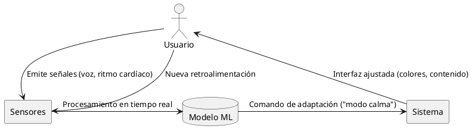

03/04/2025
Algoritmos Afectivos: La Cibernética de las Emociones
1. Origen y Contexto Histórico
- 1.1. Raíces Disciplinares
- Combinación de:
- Cibernética (Wiener, 1948): Feedback loops en sistemas.
- Psicología Affective (Ekman, 1978): Taxonomía de emociones básicas.
- HCI (Norman, 2004): Diseño emocional en interfaces.
- Combinación de:
- 1.2. Primer Implementación Práctica
- Proyecto "Affective Computing" (MIT Media Lab, 1995) liderado por Rosalind Picard.
- Objetivo inicial: Ayudar a personas con autismo a interpretar emociones.
2. Arquitectura Técnica: Flujos Internos vs. Externos
2.1. Tabla Comparativa
Table 1: Capas de Procesamiento en Algoritmos Afectivos Capa Componentes Internos Interacción Externa Detección - Sensores biométricos (ECG, EEG, cámara) Usuario → Señales fisiológicas - NLP para análisis de texto (sentimiento) Interacción verbal/escrita Procesamiento - Modelos ML (CNN para rostros, RNN para voz) Cloud → Edge computing - Bases de datos emocionales (ej.: AffectNet) Adaptación - Rules engines (ej.: "Si estrés > 70%, reducir dificultad") App cambia interfaz/contenido Feedback - A/B testing emocional Usuario evalúa experiencia 2.2. Diagrama de Flujo (Simplificado)


3. Evolución Crítica (2010-2024)
3.1. Fases Clave
Año Hito Impacto 2010 API de reconocimiento facial (Microsoft) Standardización industrial 2016 Spotify "emocional" (patente US20160358527A1) Personalización masiva 2021 GPT-3 + modulación emocional Chatbots "empáticos" 2023 UE regula "emociones biométricas" (AI Act) Limitaciones éticas - 3.2. Caso de Estudio: Replika AI
- Mecanismo: Usa transformers para detectar depresión en mensajes.
- Polémica: En 2023, usuarios reportaron dependencia emocional del bot.
4. Controversias Éticas
- 4.1. Riesgos Documentados
- "Dark Patterns" Emocionales:
- Ej.: Redes sociales que exacerban ansiedad para aumentar engagement (ref: Zuboff, 2019).
- Sesgos Raciales:
- Estudio de 2022 (Buolamwini & Gebru) muestra error del 34% en rostros oscuros vs. 0.8% en claros.
- "Dark Patterns" Emocionales:
- 4.2. Posiciones Académicas
- Optimistas (Picard, 2023): "Pueden reducir el suicidio con detección temprana".
- Críticos (Stark, 2024): "Capitalismo de vigilancia 2.0: ahora roban tus emociones".
5. Futuro: 3 Escenarios Probables (2025-2030)
| Escenario | Tecnología Involucrada | Impacto Social |
|---|---|---|
| Utopía | IA emocional en salud mental | Reducción del 40% en depresión |
| Distopía | Publicidad afectiva en metaverso | Manipulación política |
| Híbrido | Regulaciones "emocionales" globales | Equilibrio inestable |
6. Referencias Documentales
- Libros:
- Picard, R. (1997). Affective Computing. MIT Press.
- Zuboff, S. (2019). The Age of Surveillance Capitalism.
- Papers:
- Buolamwini, J. (2018). Gender Shades. MIT Media Lab.
- EU AI Act (2023). Regulación de Emociones Biométricas.
- Patentes:
- US20160358527A1 (2016). System for mood-based content selection.
- Estudios:
- IEEE (2024). Ethical Guidelines for Affective AI.
"La pregunta no es si las máquinas pueden sentir emociones, sino cómo usan las nuestras contra nosotros." — Bruce Sterling (2024)